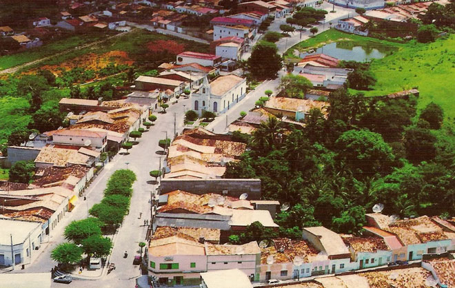

O que eu mais gosto em ITABI-SERGIPE
Passear no Parque da Pedra da Paciência!

No médio sertão sergipano, eis que uma verdadeira obra de arte ganha evidência entre moradores e turistas da região de Itabi. A região do parque fica localizada na praça da pedra da paciência, por isso as vezes você pode justamente ouvir falar em praça da pedra da paciência. A obra foi inaugurada pelo então governador na época Marcelo Déda. O conceito é que embora uma das pedras gigantescas (localizada no marco central do parque) que em termos a tamanho é muito maior, a mesma se encontra pacientemente fixada em cima de uma pequena base. Por isso o nome.
A praça possui infraestrutura completa de turismo em seus arredores. O complexo possui uma área total próxima de 9000 metros quadrados. Um ótimo espaço para encontros e lazer para todas as idades. O nome da cidade possui relação com as pedras, uma vez que ITABI significa “ITA” = pedra e “BI” = duas. As pedras sempre estiveram no local, a reforma em si, foi em todo o entorno, transformando a então praça da pedra da paciência em uma espécie de complexo que leva o nome do parque atualmente. O local conta ainda com parquinhos infantis, diversos bancos e mesas aptos para a realização de jogos de tabuleiro. O espaço conta ainda com quadras de esporte, piscina, restaurante, espaço cultural para apresentações culturais, além de contar com infraestruturas básicas como banheiros e vestiários na região da piscina. O espaço é todo adaptado e respeita as regras de acessibilidade. sergipeturismo
Corrida de Jegue
A Corrida do Jegue de Itabi é um evento tradicional na cidade de Itabi, Sergipe, que acontece anualmente em setembro e envolve não apenas a corrida de jegues, mas também outras atividades como cavalgadas, vaquejada, motocross e shows. A festa, que já está em sua 42ª edição em 2024, atrai muitos turistas e valoriza a cultura nordestina.
A corrida do jegue é atraida por varios turistas de todos os lugares do Brasil. Acesse o site abaixo para mais informações sobre a corrida. Corrida do Jegue
História de Itabi
Primeiros moradores No ano de 1821, oriundos da Fazenda Sítios Novos (hoje município de Canhoba) dois caçadores em seus desbravamentos, chegaram a descobrir uma lagoa nas proximidades da Pedra da Paciência (nome dado pelos próprios em se tratar-se de uma beleza). A então região ficou por eles denominada “Lagoa das Panelas” em razão de terem encontrado no local inúmeras quantidades de panelas de origem indígena. Os dois desbravadores por nome de José Ferreira de Góis e Antônio José dos Santos, por serem freqüentadores da feira pública de Propriá, espalharam a notícia da localização da Lagoa das Panelas, chegando então aos ouvidos do comerciante de açúcar Manoel Quinca Palatem, senhor de engenho no povoado Cutia, município de Capela, o qual colocou os devidos dados sobre a exata localização da Pedra da Paciência, tendo como ponto de orientação a Serra da Melancia. No local foi erguida uma bandeira para melhor exatidão. O comerciante e senhor de engenho Manoel Quinca Palatem, traçando um percurso cansativo, saindo da Cutia acompanhado de escravos e zabumbas, que serviam para espantar as onças que habitavam na região, passando pela Taquera, Segredo, Saco de Areia, Moita Redonda, Braúna Torta, Queimadinha, Guedes e Travessia (município de Aquidabã), Mata Grande, Baixo do Mamoeiro e Pedra da Formosa, rumo a Lagoa das Panelas, também acompanhado da família Manoel Quinca Palatem, fixou-se no local construído seu sobrado no alto da atual rua Boa Vista. Denomina de Panelas o lugarejo já em 1884, teria construído um cruzeiro na Fazenda Bela Vista de propriedade de João Correa Palatem, onde foi celebrada a primeira missa pelo padre Francisco Gonçalves de Lima. Em 1886 tornava-se concluída a pequena capela do lugarejo, que a 8 de setembro de 1897 o padre Francisco de Lima, introduziu a imagem de Nossa Senhora da Conceição, padroeira do lugarejo. Em seguida, a denominação Lagoa das Panelas foi alterada para Nossa Senhora da Providência, em virtude do constante crescimento do lugarejo pela divina providência. Já em 7 de janeiro de 1891 foi realizada a primeira feira, tendo dentre seus vários moradores a alferes Pedro Vieira de Menezes, precursor político, oriundo do município Jacaré dos Homens, em Alagoas.
Essa e outras informações sobre a cidade de itabi-se, pode ser encontradas no site abaixo. História de Itabi-se
Existem muitas formas de intreter na cidade...
- Passear no Parque da Pedra da Paciência!
- Corrida de Jegue
- História de Itabi
- Diversas varriedades na cultura
- E muito mais!